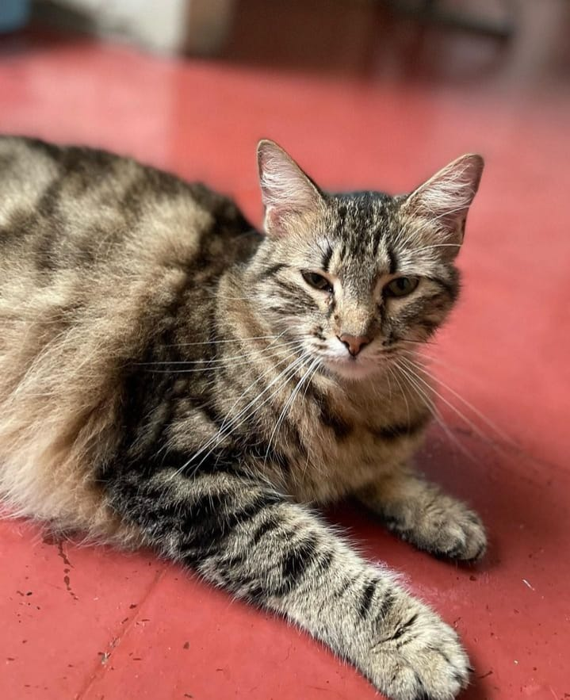
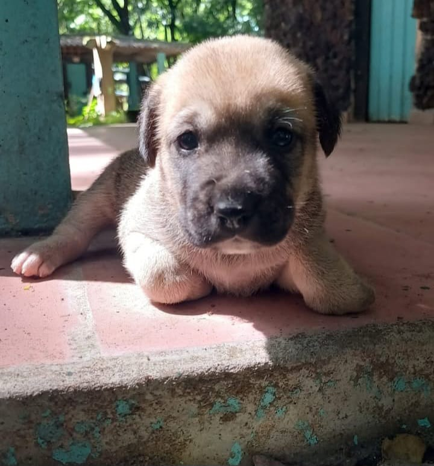
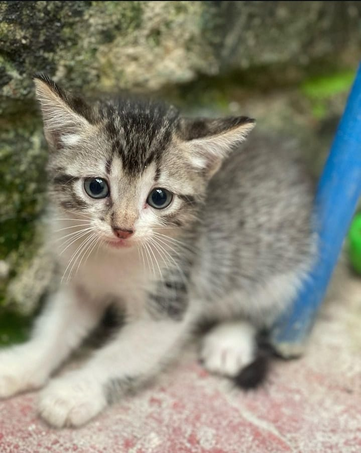
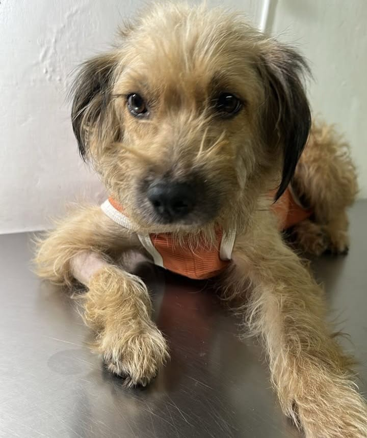

Descubre los Beneficios de Adoptar
Porque cada huella cuenta en tu vida 🐾💜




🐶 Beneficios de tener un perro
- Compañeros leales y protectores.
- Estilo de vida más activo.
- Mejoran el estado de ánimo y reducen el estrés.
- Favorecen la socialización.
💜 ¿Por qué adoptar?
Adoptar es darle una segunda oportunidad a un animal que necesita un hogar. Con tu ayuda, salvas vidas, apoyas a los refugios y ganas un amigo fiel para siempre.
🐱 Beneficios de tener un gato
- Independientes y fáciles de cuidar.
- Proporcionan calma y compañía.
- Reducen la ansiedad.
- Limpios y silenciosos.